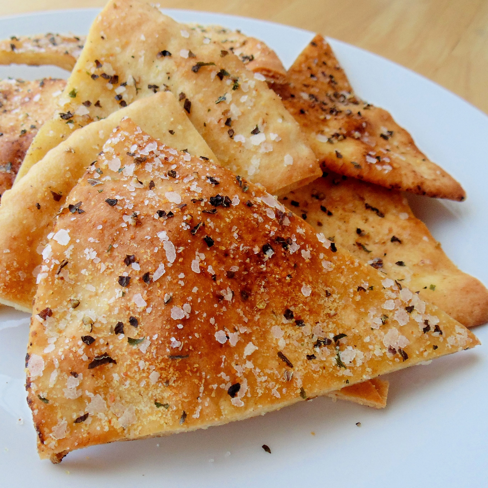

Pita Chips

These baked pita chips make a lovely accompaniment to any dip or spread.
Ingredients
- ½ cup olive oil
- 1 teaspoon garlic salt
- 1 teaspoon dried chervil
- ½ teaspoon dried basil
- ½ teaspoon ground black pepper
- 12 pita bread pockets
Steps
- Preheat the oven to 400 degrees F (200 degrees C). Line two rimmed baking sheets with parchment paper.
- Mix oil, garlic salt, chervil, basil, and pepper together in a small bowl.
- Cut each pita bread into 8 triangles using a sharp knife or pizza cutter.
- Arrange some pita triangles in a single layer on each of the prepared baking sheets; brush with oil mixture. Not all will fit, so set remaining triangles aside.
- Bake on two racks of the preheated oven until lightly browned and crispy, about 7 minutes, switching halfway through.
- Transfer pita chips to a serving platter and repeat Steps 4 to 5 with remaining triangles and oil mixture.
Return to main page